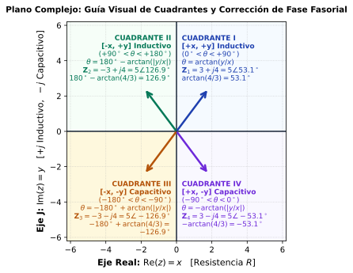

Fasores y Análisis de Circuitos en CA
De la señal sinusoidal al circuito: representación, álgebra compleja e interpretación física
⚡ Idea central
El análisis fasorial no consiste en memorizar conversiones. Consiste en aprender una cadena de razonamiento:
\boxed{ \text{Señal temporal} \;\longrightarrow\; \text{Coseno canónico} \;\longrightarrow\; \text{Fasor} \;\longrightarrow\; \text{Álgebra compleja} \;\longrightarrow\; \text{Circuito CA} }
El objetivo de esta guía es que puedas recorrer esa cadena sin perder el significado físico de cada paso.
1 Ruta de aprendizaje
01 · SEÑAL
Identifica:
- amplitud
- frecuencia
- \omega
- fase
- signo
v(t)
02 · NORMALIZAR
Lleva la señal a:
V_m\cos(\omega t+\phi)
Aquí se resuelven seno y signos negativos.
03 · FASOR
Elimina la dependencia explícita del tiempo:
\mathbf V=V\angle\phi
Usa pico o RMS, pero no los mezcles.
04 · RESOLVER
Usa:
- rectangular → sumar/restar
- polar → multiplicar/dividir
- impedancias → circuitos
Al terminar, no solo deberías poder calcular un fasor. Deberías poder explicar qué significa su magnitud, su ángulo y su signo dentro de un circuito eléctrico.
2 Señales sinusoidales: el punto de partida
Una señal sinusoidal puede escribirse como:
v(t)=V_m\cos(\omega t+\phi)
donde:
| Magnitud | Significado | Unidad |
|---|---|---|
| V_m | amplitud máxima | V |
| \omega | frecuencia angular | rad/s |
| \phi | fase inicial | ° o rad |
| t | tiempo | s |
La frecuencia angular \omega se relaciona con la frecuencia f: \quad \boxed{\omega=2\pi f}
\qquad \qquad \qquad \qquad \qquad \qquad \qquad \qquad y el período T: \quad \boxed{T=\frac{1}{f}}
\qquad \qquad \qquad \qquad \qquad \qquad \qquad \qquad Por tanto: \qquad \quad \boxed{\omega=\frac{2\pi}{T}}
Cuando pasamos al dominio fasorial, la variable t deja de aparecer explícitamente, pero la frecuencia no desaparece del circuito.
En particular:
X_L=\omega L
X_C=\frac{1}{\omega C}
La frecuencia termina determinando la impedancia y, por tanto, las corrientes y tensiones.
3 ¿Qué es realmente un fasor?
Un fasor es una representación compleja de la magnitud y fase de una señal sinusoidal respecto a una frecuencia angular determinada.
Partimos de:
v(t)=V_m\cos(\omega t+\phi)
y definimos:
\boxed{\mathbf V=V_m\angle\phi}
La reconstrucción temporal se expresa como:
\boxed{ v(t)=\operatorname{Re}\left\{\mathbf V e^{j\omega t}\right\} }
Por tanto:
\mathbf V=V_m\angle\phi \quad\Longleftrightarrow\quad v(t)=V_m\cos(\omega t+\phi)
4 Laboratorio 1: Señal ↔︎ Fasor
🔬 Laboratorio Interactivo — De la Señal al Fasor
Mueve el tiempo (o dale reproducir) y observa la misma información física expresada de dos formas simultáneas: el vector rotatorio en el plano de Gauss y el trazo instantáneo en el dominio del tiempo. El fasor no es una simple foto arbitraria: es la “semilla” compleja que reconstruye toda la onda sinusoidal.
0.00 V
30.0°
376.99 rad/s
16.67 ms
120.00 ∠ 30.0° V
El fasor no contiene el tiempo explícitamente.
Contiene la información necesaria para representar la amplitud y fase de una sinusoidal de frecuencia conocida. La dependencia temporal se recupera mediante e^{j\omega t}.
4.1 El sinor y la proyección temporal
El concepto geométrico puede visualizarse como un vector rotatorio cuya proyección sobre el eje real produce la sinusoidal.

La imagen debe interpretarse como una representación geométrica, no como la definición matemática completa del fasor.
5 De seno a coseno: normalización antes de obtener el fasor
La convención utilizada en esta guía es:
\boxed{V_m\cos(\omega t+\phi)}
Por eso, antes de extraer el fasor debemos normalizar la señal.
5.1 Identidades esenciales
\boxed{\sin(\theta)=\cos(\theta-90^\circ)}
\boxed{-\sin(\theta)=\cos(\theta+90^\circ)}
\boxed{-\cos(\theta)=\cos(\theta\pm180^\circ)}
5.1.1 Tabla de conversión
| Señal original | Forma coseno | Cambio de fase |
|---|---|---|
| +\sin(\omega t+\theta) | \cos(\omega t+\theta-90^\circ) | -90^\circ |
| -\sin(\omega t+\theta) | \cos(\omega t+\theta+90^\circ) | +90^\circ |
| +\cos(\omega t+\theta) | ya está normalizada | 0^\circ |
| -\cos(\omega t+\theta) | \cos(\omega t+\theta+180^\circ) | +180^\circ |
Primero normaliza la función. Después extrae el fasor.
No intentes memorizar directamente un fasor para cada combinación de seno, coseno y signo.
5.2 Ejemplo
Sea: \qquad \qquad \qquad i(t)=-4\sin(10t+15^\circ)\ \mathrm A
Normalizamos: \qquad -4\sin(10t+15^\circ) = 4\cos(10t+15^\circ+90^\circ)
Entonces: \qquad \qquad i(t)=4\cos(10t+105^\circ)
\qquad \qquad \qquad \qquad \boxed{\mathbf I=4\angle105^\circ\ \mathrm A}
6 Valor pico y valor eficaz RMS
Para una sinusoidal:
V_{\mathrm{rms}}=\frac{V_m}{\sqrt2}
por tanto:
\boxed{ V_{\mathrm{rms}}\approx0.7071V_m }
La fase no cambia al convertir de pico a RMS:
\boxed{ \mathbf V_{\mathrm{rms}} = \frac{V_m}{\sqrt2}\angle\phi }
6.1 Ejemplo
v(t)=120\cos(\omega t+30^\circ)\ \mathrm V
Fasor pico:
\mathbf V_p=120\angle30^\circ\ \mathrm V
Fasor RMS:
\mathbf V_{\mathrm{rms}} = \frac{120}{\sqrt2}\angle30^\circ = 84.85\angle30^\circ\ \mathrm V
En una misma ecuación fasorial, utiliza todos los valores en pico o todos en RMS.
Nunca mezcles:
V_{\mathrm{rms}} \quad\text{con}\quad I_{\mathrm{pico}}
sin realizar antes la conversión correspondiente.
7 ¿Cuándo puedo utilizar fasores?
La representación fasorial convencional se utiliza para:
- señales sinusoidales;
- régimen permanente;
- una frecuencia angular determinada;
- sistemas lineales donde las operaciones fasoriales sean aplicables.
Una señal no sinusoidal general no puede representarse mediante un único fasor.
Por ejemplo:
x(t)=\sin(10t)+\sin(100t)
contiene dos frecuencias diferentes.
Cada componente puede analizarse por separado mediante herramientas apropiadas, pero no existe un único fasor que represente toda la señal.
8 El plano complejo
Un número complejo puede representarse como:
\boxed{\mathbf z=x+jy}
donde:
- x es la componente real;
- y es la componente imaginaria;
- j=\sqrt{-1}.
También puede escribirse en forma polar:
\boxed{\mathbf z=r\angle\theta}
o exponencial:
\boxed{\mathbf z=re^{j\theta}}
8.1 Conversión rectangular → polar
Para obtener la magnitud r y el ángulo \theta a partir de las coordenadas cartesianas (x, y):
\boxed{r=\sqrt{x^2+y^2}}
y el ángulo \theta debe calcularse considerando estrictamente el signo de x y de y (ajuste de cuadrante):
\boxed{\theta=\operatorname{atan2}(y,x)}
atan2 y no solo \arctan(y/x)?
La función arco tangente estándar \arctan(y/x) de las matemáticas continuas únicamente devuelve valores en el rango (-90^\circ, +90^\circ) (Cuadrantes I y IV).
Si un número complejo tiene x < 0 (Cuadrantes II y III), la división y/x arroja un signo ambiguo: - \frac{4}{-3} = -1.33 \implies \arctan(-1.33) = -53.13^\circ (¡Falso! El punto (-3, 4) está en el Cuadrante II a 126.87^\circ).
La función matemática \operatorname{atan2}(y,x) analiza ambos signos independientemente para entregar el ángulo geométrico verdadero en (-180^\circ, +180^\circ].
En tu calculadora física no existe una tecla llamada atan2 ni atan. Tienes 3 formas prácticas de calcularlo en exámenes y laboratorio:
8.1.0.1 🥇 Método 1: La función directa Pol( (El atan2 de la calculadora)
Las calculadoras científicas estándar (Casio fx-570, fx-991, fx-82, etc.) incluyen la función de conversión automática de coordenadas con ajuste de cuadrante incluido:
- De Rectangular a Polar:
- Presiona
SHIFT++\longrightarrow Aparece en pantallaPol(. - Digita la parte real x, luego la coma con
SHIFT+)y la parte imaginaria y.
Ejemplo:Pol(-3, 4)y presiona=. - Resultado instantáneo:
r = 5,θ = 126.87°(el ángulo ya viene con el cuadrante exacto).
- Presiona
- De Polar a Rectangular:
- Presiona
SHIFT+-\longrightarrow ApareceRec(. - Digita
Rec(r, θ). Ejemplo:Rec(5, 126.87) =\longrightarrow EntregaX = -3,Y = 4.
- Presiona
8.1.0.2 🥈 Método 2: Con la tecla tan⁻¹ y ajuste manual de cuadrante
Si calculas por partes mediante r = \sqrt{x^2+y^2} y la tecla tan⁻¹ (SHIFT + tan):
- Calcula el ángulo base con valores absolutos: \alpha = \tan^{-1}\left(\left|\frac{y}{x}\right|\right).
- Aplica la regla según los signos de (x, y):
| Cuadrante | Signos (x, y) | Fórmula de Corrección en Calculadora | Ejemplo con |x|=3, |y|=4 (\alpha = 53.13^\circ) |
|---|---|---|---|
| I | (+x, +y) | \theta = \alpha | \mathbf{Z} = 3 + j4 \implies \theta = \mathbf{+53.13^\circ} |
| II | (-x, +y) | \theta = 180^\circ - \alpha | \mathbf{Z} = -3 + j4 \implies \theta = 180^\circ - 53.13^\circ = \mathbf{+126.87^\circ} |
| III | (-x, -y) | \theta = -180^\circ + \alpha | \mathbf{Z} = -3 - j4 \implies \theta = -180^\circ + 53.13^\circ = \mathbf{-126.87^\circ} |
| IV | (+x, -y) | \theta = -\alpha | \mathbf{Z} = 3 - j4 \implies \theta = \mathbf{-53.13^\circ} |
8.1.0.3 🥉 Método 3: Modo Números Complejos (MODE 2: CMPLX)
El método más rápido para resolver circuitos completos:
- Activar modo complejo: Presiona
MODE\longrightarrow2: CMPLX. - Verifica que tu calculadora esté en grados sexagesimales (indicador
DoDegen la parte superior). - Escribe el número directamente en pantalla:
Digita-3 + 4e inserta la unidad imaginaria j presionando la teclaENG(aparece la i). - Convertir a Polar:
- En Casio clásica: Presiona
SHIFT+2(menú CMPLX) \longrightarrow selecciona3: ▶r∠θ\longrightarrow=. - En Casio ClassWiz: Presiona
OPTN\longrightarrow flecha abajo \longrightarrow1: ▶r∠θ\longrightarrow=.
- En Casio clásica: Presiona
- La pantalla mostrará directamente:
5 ∠ 126.87°.
8.1.0.3.1 🎬 Videotutoriales paso a paso según tu modelo de calculadora:
- 📺 Casio fx-9750GIII (Gráfica): Ver tutorial paso a paso
- 📺 Casio fx-991ES PLUS / fx-570ES: Ver tutorial paso a paso
- 📺 Casio fx-82MS / fx-350MS: Ver tutorial paso a paso
- 📺 Calculadora Científica Universal / Genérica: Ver tutorial paso a paso
8.2 Conversión polar → rectangular
\boxed{x=r\cos\theta}
\boxed{y=r\sin\theta}
por tanto:
\boxed{ r\angle\theta = r\cos\theta+jr\sin\theta }
9 Cuadrantes: magnitud y fase con significado

| Cuadrante | x | y | Interpretación angular |
|---|---|---|---|
| I | + | + | 0^\circ<\theta<90^\circ |
| II | - | + | 90^\circ<\theta<180^\circ |
| III | - | - | -180^\circ<\theta<-90^\circ |
| IV | + | - | -90^\circ<\theta<0^\circ |
No corrijas el ángulo “a ojo”.
Primero identifica:
(x,y)
después el cuadrante y finalmente el ángulo.
10 El operador j: un giro de 90^\circ
Una de las ideas más importantes de todo el análisis fasorial es:
\boxed{j=1\angle90^\circ}
Multiplicar por j produce un giro antihorario de 90^\circ:
\boxed{j\mathbf Z=|\mathbf Z|\angle(\theta+90^\circ)}
Multiplicar por -j produce:
\boxed{-j\mathbf Z=|\mathbf Z|\angle(\theta-90^\circ)}
10.1 Ciclo de potencias
j^0=1
j^1=j
j^2=-1
j^3=-j
j^4=1
🔬 Laboratorio Interactivo — ¿Qué significa realmente multiplicar por j?
En el plano complejo, j no es solamente un símbolo algebraico.
Multiplicar un número complejo por j produce una rotación de +90^\circ sin cambiar su magnitud.
Partiremos del número complejo: z=1
y aplicaremos sucesivamente la operación: z \rightarrow jz \rightarrow j^2z \rightarrow j^3z \rightarrow j^4z
Observa cómo una operación algebraica produce directamente un movimiento geométrico:
\boxed{\text{multiplicar por } j \;\equiv\; \text{rotar } +90^\circ}
10.2 🎯 Objetivo
Convertir el significado de j en una experiencia visual y algebraica.
Al experimentar, debes descubrir que:
j\cdot 1 = j
j\cdot j = j^2 = -1
j\cdot(-1) = -j
j\cdot(-j) = -j^2 = 1
Por tanto:
\boxed{j^4 = 1}
y cada multiplicación por j corresponde a una rotación de 90^\circ.
El ciclo se repite cada cuatro potencias.
También:
\boxed{\frac1j=-j}
En fasores, j no es simplemente una letra algebraica.
Es un operador que representa un desplazamiento angular de +90^\circ.
11 Operaciones con números complejos
11.1 Suma y resta
La forma rectangular es la más conveniente:
(a+jb)+(c+jd) = (a+c)+j(b+d)
11.2 Multiplicación
La forma polar es especialmente conveniente:
(r_1\angle\theta_1)(r_2\angle\theta_2) = r_1r_2\angle(\theta_1+\theta_2)
11.3 División
\frac{r_1\angle\theta_1}{r_2\angle\theta_2} = \frac{r_1}{r_2}\angle(\theta_1-\theta_2)
11.4 Conjugado
\boxed{ (a+jb)^*=a-jb }
y:
\boxed{ (r\angle\theta)^*=r\angle(-\theta) }
11.5 División rectangular
\frac{a+jb}{c+jd} = \frac{(a+jb)(c-jd)}{c^2+d^2}
por tanto:
\boxed{ \frac{a+jb}{c+jd} = \frac{ac+bd}{c^2+d^2} + j\frac{bc-ad}{c^2+d^2} }
🔬 Laboratorio 3 — Transformación Complejo ↔︎ Polar y Cuadrantes
En ingeniería eléctrica, la conversión fluida entre la forma rectangular (x + jy, ideal para sumar y restar fasores) y la forma polar (r\angle\theta, ideal para multiplicar, dividir y calcular potencias) es esencial.
\mathbf Z = x + jy = r\angle\theta = r\mathrm{e}^{j\theta}
donde: r = \sqrt{x^2 + y^2}, \qquad \theta = \operatorname{atan2}(y, x)
12 Impedancia: donde el fasor se convierte en Ingeniería Eléctrica
La gran conexión entre fasores y circuitos es:
\boxed{\mathbf V=\mathbf I\mathbf Z}
o:
\boxed{\mathbf I=\frac{\mathbf V}{\mathbf Z}}
La impedancia es compleja:
\boxed{\mathbf Z=R+jX}
donde:
- R → resistencia;
- X → reactancia.
Su forma polar es:
\boxed{\mathbf Z=|\mathbf Z|\angle\theta_Z}
13 Elementos pasivos R, L y C
| Elemento | Relación temporal | Impedancia | \theta_V-\theta_I |
|---|---|---|---|
| Resistor | v=Ri | \mathbf Z_R=R | 0^\circ |
| Inductor | v=L\,di/dt | \mathbf Z_L=j\omega L | +90^\circ |
| Capacitor | i=C\,dv/dt | \mathbf Z_C=1/(j\omega C) | -90^\circ |
13.1 Resistor
\boxed{\mathbf Z_R=R=R\angle0^\circ}
Tensión y corriente están en fase.
13.2 Inductor
\boxed{\mathbf Z_L=j\omega L=\omega L\angle90^\circ}
Por tanto:
\boxed{\mathbf V_L=j\omega L\mathbf I}
La tensión adelanta a la corriente 90^\circ.
13.2.1 🧠 ELI
E antes que I → en el inductor:
V_L\text{ adelanta a }I
13.3 Capacitor
\boxed{ \mathbf Z_C= \frac1{j\omega C} = -j\frac1{\omega C} }
Por tanto:
\boxed{ \mathbf V_C=-j\frac1{\omega C}\mathbf I }
La tensión atrasa a la corriente 90^\circ.
13.3.1 🧠 ICE
I antes que E → en el capacitor:
I\text{ adelanta a }V_C
La comprensión profunda está en:
+j\Rightarrow+90^\circ
-j\Rightarrow-90^\circ
Las reglas ELI/ICE sirven para recordar rápidamente el resultado.
14 Ejemplo integrado: de la señal al circuito RLC
Consideremos:
R=30\ \Omega
L=50\ \mathrm{mH}
C=25\ \mu\mathrm F
y:
v(t)=120\cos(1000t+30^\circ)\ \mathrm V
14.1 Paso 1 — Frecuencia
\omega=1000\ \mathrm{rad/s}
14.2 Paso 2 — Impedancias
Inductor:
X_L=\omega L = 1000(0.050) = 50\ \Omega
\mathbf Z_L=j50\ \Omega
Capacitor:
X_C=\frac1{\omega C} = \frac1{1000(25\times10^{-6})} = 40\ \Omega
\mathbf Z_C=-j40\ \Omega
14.3 Paso 3 — Impedancia equivalente
Al ser un circuito serie:
\mathbf Z_T = R+\mathbf Z_L+\mathbf Z_C
\mathbf Z_T = 30+j50-j40
\boxed{\mathbf Z_T=30+j10\ \Omega}
En polar:
|\mathbf Z_T| = \sqrt{30^2+10^2} = 31.62\ \Omega
\theta_Z = \arctan\left(\frac{10}{30}\right) = 18.43^\circ
por tanto:
\boxed{\mathbf Z_T=31.62\angle18.43^\circ\ \Omega}
14.4 Paso 4 — Corriente
Usando fasores pico:
\mathbf V=120\angle30^\circ\ \mathrm V
entonces:
\mathbf I = \frac{\mathbf V}{\mathbf Z_T}
\mathbf I = \frac{120\angle30^\circ} {31.62\angle18.43^\circ}
\boxed{ \mathbf I = 3.80\angle11.57^\circ\ \mathrm A }
La señal temporal:
\boxed{ i(t)=3.80\cos(1000t+11.57^\circ)\ \mathrm A }
14.5 Paso 5 — Tensiones individuales
Resistor:
\mathbf V_R = \mathbf I R = 114.0\angle11.57^\circ\ \mathrm V
Inductor:
\mathbf V_L = \mathbf I(j50) = 190.0\angle101.57^\circ\ \mathrm V
Capacitor:
\mathbf V_C = \mathbf I(-j40) = 152.0\angle-78.43^\circ\ \mathrm V
Finalmente:
\boxed{ \mathbf V_R+\mathbf V_L+\mathbf V_C = \mathbf V }
Esta es la conexión fundamental:
\boxed{ v(t) \rightarrow \mathbf V \rightarrow \mathbf Z \rightarrow \mathbf I \rightarrow i(t) }
15 Diagrama fasorial: no basta con calcular
Un diagrama fasorial debe permitir responder preguntas como:
- ¿Cuál es la referencia?
- ¿Qué fasor adelanta?
- ¿Qué fasor atrasa?
- ¿Por qué?
- ¿Cuál es la suma resultante?
- ¿Qué indica el ángulo de la impedancia?
Si:
\mathbf Z=|\mathbf Z|\angle\theta_Z
entonces:
\theta_V-\theta_I=\theta_Z
Por tanto:
- \theta_Z>0 → comportamiento inductivo;
- \theta_Z=0 → comportamiento resistivo;
- \theta_Z<0 → comportamiento capacitivo.
16 Herramienta interactiva: Diagrama Fasorial del Circuito RLC
📐 Diagrama Fasorial Interactivo — Ejemplo Integrado RLC
Activa o desactiva cada fasor para construir el diagrama paso a paso. Con I, V_R, V_L y V_C activos, verás además la cadena punta-cola (líneas punteadas) que demuestra geométricamente por qué \mathbf V_R+\mathbf V_L+\mathbf V_C=\mathbf V.
17 Banco de Ejercicios y Problemas de Práctica
A continuación se presenta un compendio graduado desde niveles fundamentales hasta análisis de circuitos completos en CA.
Cada ejercicio sigue una metodología de aprendizaje activo: primero intenta resolverlo por tu cuenta a partir del enunciado; si necesitas orientación, despliega la Pista Conceptual; luego verifica tu procedimiento con la Solución Paso a Paso y consolida el razonamiento con el Sentido Físico / Comprobación.
17.1 🟢 Nivel 1: Fundamentos y Transformaciones
Ejercicio 1 — Conversión de señales temporales a fasores
17.1.0.0.1 📋 Enunciado
Dadas las siguientes señales temporales de tensión y corriente:
v(t) = 120\sqrt{2}\cos(377t - 45^\circ)\ \mathrm V
i(t) = -10\sin(377t + 30^\circ)\ \mathrm A
Determinar:
- El fasor en valor pico (\mathbf V_p, \mathbf I_p).
- El fasor en valor eficaz o RMS (\mathbf V_{\mathrm{rms}}, \mathbf I_{\mathrm{rms}}).
- La forma estándar de referencia es la función coseno positiva: A\cos(\omega t + \theta) \longleftrightarrow A\angle\theta.
- Para convertir una función seno negativa a coseno positivo, utiliza la identidad trigonométrica: -\sin(\alpha) = \cos(\alpha + 90^\circ)
- En señales sinusoidales puras, la relación entre el valor pico y el valor eficaz es: X_{\mathrm{rms}} = \frac{X_p}{\sqrt{2}}
1. Para la tensión v(t): - Como ya se encuentra en forma coseno positiva: \mathbf V_p = 120\sqrt{2}\angle -45^\circ \approx 169.71\angle -45^\circ\ \mathrm V - Para el valor eficaz o RMS: V_{\mathrm{rms}} = \frac{120\sqrt{2}}{\sqrt{2}} = 120\ \mathrm V \implies \mathbf V_{\mathrm{rms}} = 120\angle -45^\circ\ \mathrm V
2. Para la corriente i(t): - Transformamos a la forma coseno canónica: i(t) = -10\sin(377t + 30^\circ) = 10\cos(377t + 30^\circ + 90^\circ) = 10\cos(377t + 120^\circ)\ \mathrm A - Fasor pico: \mathbf I_p = 10\angle 120^\circ\ \mathrm A - Fasor RMS: I_{\mathrm{rms}} = \frac{10}{\sqrt{2}} \approx 7.07\ \mathrm A \implies \mathbf I_{\mathrm{rms}} = 7.07\angle 120^\circ\ \mathrm A
🔍 Sentido Físico / Comprobación:
La pulsación \omega = 377\ \mathrm{rad/s} corresponde a la frecuencia industrial estándar de f = \frac{377}{2\pi} \approx 60\ \mathrm{Hz}. El ángulo de fase de la tensión es -45^\circ mientras que el de la corriente es +120^\circ; esto indica una diferencia de fase total de \Delta\phi = 120^\circ - (-45^\circ) = 165^\circ entre ambas variables.
Ejercicio 2 — Conversión entre formas rectangular y polar
17.1.0.0.2 📋 Enunciado
Realizar las siguientes conversiones entre representaciones complejas:
Convertir a forma polar: \mathbf Z_1 = 6 + j8\ \Omega \mathbf Z_2 = -5 + j5\ \Omega
Convertir a forma rectangular: \mathbf I = 10\angle -60^\circ\ \mathrm A
- Para rectangular a polar (z = x + jy \implies r\angle\theta):
- Módulo: r = \sqrt{x^2 + y^2}.
- Ángulo: Identifica el cuadrante antes de usar la función arcotangente:
- Cuadrante I (x>0, y>0): \theta = \arctan(y/x)
- Cuadrante II (x<0, y>0): \theta = 180^\circ - \arctan(|y/x|) o \arctan(y/x) + 180^\circ
- Cuadrante IV (x>0, y<0): \theta = -\arctan(|y/x|)
- Para polar a rectangular (r\angle\theta \implies x + jy):
- x = r\cos\theta, y = r\sin\theta.
1. Para \mathbf Z_1 = 6 + j8\ \Omega (Cuadrante I): - Módulo: |\mathbf Z_1| = \sqrt{6^2 + 8^2} = \sqrt{36 + 64} = \sqrt{100} = 10\ \Omega - Ángulo: \theta_1 = \arctan\left(\frac{8}{6}\right) \approx 53.13^\circ \mathbf Z_1 = 10\angle 53.13^\circ\ \Omega
2. Para \mathbf Z_2 = -5 + j5\ \Omega (Cuadrante II): - Módulo: |\mathbf Z_2| = \sqrt{(-5)^2 + 5^2} = \sqrt{50} = 5\sqrt{2} \approx 7.07\ \Omega - Ángulo: Al estar en el cuadrante II (x < 0, y > 0), \theta_2 = 180^\circ - \arctan(5/5) = 180^\circ - 45^\circ = 135^\circ \mathbf Z_2 = 5\sqrt{2}\angle 135^\circ \approx 7.07\angle 135^\circ\ \Omega
3. Para \mathbf I = 10\angle -60^\circ\ \mathrm A (Cuadrante IV): - Parte real: I_x = 10\cos(-60^\circ) = 10(0.5) = 5\ \mathrm A - Parte imaginaria: I_y = 10\sin(-60^\circ) = 10\left(-\frac{\sqrt{3}}{2}\right) \approx -8.66\ \mathrm A \mathbf I = 5 - j8.66\ \mathrm A
🔍 Sentido Físico / Comprobación:
\mathbf Z_1 = 6+j8 corresponde al triángulo rectángulo notable 3-4-5 escalado por un factor 2 (6, 8, 10). En \mathbf I = 10\angle -60^\circ, la parte real positiva (5\ \mathrm A) y la parte imaginaria negativa (-8.66\ \mathrm A) confirman que el vector reside en el cuarto cuadrante.
17.2 🟡 Nivel 2: Operaciones Complejas e Impedancias
En redes eléctricas pasivas (sin fuentes dependientes ni generadores internos), la parte resistiva es estrictamente no negativa (R \ge 0). Esto confina la impedancia \mathbf Z = R + jX exclusivamente a los cuadrantes I y IV del plano complejo (semiplano derecho, -90^\circ \le \theta_Z \le +90^\circ).
- X > 0 (\theta_Z > 0): Comportamiento globalmente inductivo (la tensión adelanta a la corriente).
- X < 0 (\theta_Z < 0): Comportamiento globalmente capacitivo (la corriente adelanta a la tensión).
- X = 0 (\theta_Z = 0^\circ): Comportamiento resistivo puro (tensión y corriente en fase).
Ejercicio 3 — Suma fasorial en un nodo (Ley de Kirchhoff de Corrientes)
17.2.0.0.1 📋 Enunciado
En un nodo de un circuito de corriente alterna convergen dos corrientes:
i_1(t) = 4\cos(\omega t + 30^\circ)\ \mathrm A
i_2(t) = 6\sin(\omega t + 60^\circ)\ \mathrm A
Determinar:
La corriente total i_T(t) = i_1(t) + i_2(t) en el dominio del tiempo.
- Regla de oro: Nunca sumes directamente las amplitudes temporales (4 + 6 \neq 10).
- Homogeneiza ambas señales a cosenos positivos mediante identidades trigonométricas: \sin(\alpha) = \cos(\alpha - 90^\circ).
- Convierte a fasores en polar y luego a rectangular para sumar componentes reales con reales e imaginarias con imaginarias.
- Convierte el fasor resultante de rectangular a polar y regresa al dominio del tiempo.
Paso 1: Homogeneización y conversión a fasores: - \mathbf I_1 = 4\angle 30^\circ\ \mathrm A - i_2(t) = 6\sin(\omega t + 60^\circ) = 6\cos(\omega t + 60^\circ - 90^\circ) = 6\cos(\omega t - 30^\circ)\ \mathrm A
\implies \mathbf I_2 = 6\angle -30^\circ\ \mathrm A
Paso 2: Conversión a componentes rectangulares: \mathbf I_1 = 4\cos(30^\circ) + j4\sin(30^\circ) = 2\sqrt{3} + j2 \approx 3.4641 + j2.0000\ \mathrm A \mathbf I_2 = 6\cos(-30^\circ) + j6\sin(-30^\circ) = 3\sqrt{3} - j3 \approx 5.1962 - j3.0000\ \mathrm A
Paso 3: Suma fasorial algebraicamente: \mathbf I_T = \mathbf I_1 + \mathbf I_2 = (3.4641 + 5.1962) + j(2.0000 - 3.0000) = 8.6603 - j1.0000\ \mathrm A
Paso 4: Conversión a polar y retorno al dominio temporal: - Módulo: |\mathbf I_T| = \sqrt{8.6603^2 + (-1.0000)^2} = \sqrt{75 + 1} = \sqrt{76} \approx 8.7178\ \mathrm A - Ángulo: \theta = \arctan\left(\frac{-1.0000}{8.6603}\right) \approx -6.59^\circ
\mathbf I_T \approx 8.72\angle -6.59^\circ\ \mathrm A \boxed{i_T(t) = 8.72\cos(\omega t - 6.59^\circ)\ \mathrm A}
🔍 Sentido Físico / Comprobación:
La amplitud total resultante (8.72\ \mathrm A) es menor que la suma aritmética simple (4 + 6 = 10\ \mathrm A) debido al desfase de 60^\circ existente entre ambas corrientes, lo que produce una interferencia destructiva parcial.
Ejercicio 4 — Evaluación de expresión compleja con conjugado
17.2.0.0.2 📋 Enunciado
Calcular el valor del número complejo \mathbf X:
\mathbf X = \left[ \frac{(4 + j3)(2 - j4)}{-1 + j2} + 5\angle -45^\circ \right]^*
Exprese el resultado en forma rectangular y polar.
- Desarrolla primero el producto del numerador recordando que j^2 = -1.
- Para dividir por un número complejo en forma rectangular, multiplica el numerador y el denominador por el conjugado del denominador: (-1 - j2).
- Pasa el término polar 5\angle -45^\circ a rectangular antes de sumarlo.
- Finalmente, aplica el operador de conjugación (\ )^*, el cual invierte el signo de la parte imaginaria: (a + jb)^* = a - jb.
Paso 1: Multiplicación en el numerador (j^2 = -1): (4+j3)(2-j4) = 8 - j16 + j6 - j^2(12) = 8 - j10 + 12 = 20 - j10
Paso 2: División multiplicando por el conjugado (-1 - j2): \frac{20 - j10}{-1 + j2} \cdot \frac{-1 - j2}{-1 - j2} = \frac{-20 - j40 + j10 + j^2(20)}{(-1)^2 + (2)^2} = \frac{-40 - j30}{5} = -8 - j6
Paso 3: Convertir 5\angle -45^\circ a rectangular y sumar: 5\angle -45^\circ = 5\cos(-45^\circ) + j5\sin(-45^\circ) = \frac{5\sqrt{2}}{2} - j\frac{5\sqrt{2}}{2} \approx 3.5355 - j3.5355 \mathbf Z_{\text{interior}} = (-8 - j6) + (3.5355 - j3.5355) = -4.4645 - j9.5355
Paso 4: Aplicación del operador conjugado (\ )^*: \mathbf X = (\mathbf Z_{\text{interior}})^* = (-4.4645 - j9.5355)^* = \boxed{-4.4645 + j9.5355}
Paso 5: Conversión a forma polar (Cuadrante II): - Módulo: |\mathbf X| = \sqrt{(-4.4645)^2 + (9.5355)^2} \approx 10.529 - Ángulo: \theta = 180^\circ - \arctan\left(\frac{9.5355}{4.4645}\right) \approx 180^\circ - 64.91^\circ = +115.09^\circ
\boxed{\mathbf X \approx 10.529\angle 115.09^\circ}
🔍 Sentido Físico / Comprobación:
El operador conjugado refleja el fasor respecto al eje real (mantiene constante la parte real y niega la parte imaginaria, o bien cambia el signo del ángulo de fase: \theta \to -\theta).
Ejercicio 5 — Impedancias en paralelo (Z_1 \parallel Z_2)
17.2.0.0.3 📋 Enunciado
Dos impedancias pasivas se conectan en paralelo:
\mathbf Z_1 = 10 + j15\ \Omega
\mathbf Z_2 = 20 - j10\ \Omega
Determinar:
- La impedancia equivalente \mathbf Z_{eq} = \dfrac{\mathbf Z_1 \mathbf Z_2}{\mathbf Z_1 + \mathbf Z_2}.
- Indicar si el conjunto resultante tiene comportamiento global inductivo o capacitivo.
- Para la suma del denominador (\mathbf Z_1 + \mathbf Z_2), opera en forma rectangular: suma partes reales y partes imaginarias.
- Para el producto del numerador (\mathbf Z_1 \cdot \mathbf Z_2), puedes multiplicar algebraicamente en rectangular o convertir ambos a polar.
- El carácter del circuito equivalente lo determina el signo de la reactancia equivalente X_{eq}: si X_{eq} > 0 es inductivo; si X_{eq} < 0 es capacitivo.
Paso 1: Suma en el denominador (\mathbf Z_1 + \mathbf Z_2): \mathbf Z_1 + \mathbf Z_2 = (10 + 20) + j(15 - 10) = 30 + j5\ \Omega
Paso 2: Producto en el numerador (\mathbf Z_1 \cdot \mathbf Z_2): \mathbf Z_1 \cdot \mathbf Z_2 = (10 + j15)(20 - j10) = 200 - j100 + j300 - j^2(150) = 350 + j200\ \Omega^2
Paso 3: División multiplicando por el conjugado (30 - j5): \mathbf Z_{eq} = \frac{350 + j200}{30 + j5} \cdot \frac{30 - j5}{30 - j5} = \frac{(350\cdot 30 + 200\cdot 5) + j(200\cdot 30 - 350\cdot 5)}{30^2 + 5^2} \mathbf Z_{eq} = \frac{11500 + j4250}{925} \approx \boxed{12.43 + j4.59\ \Omega}
Paso 4: Conversión a forma polar: - Módulo: |\mathbf Z_{eq}| = \sqrt{12.4324^2 + 4.5946^2} \approx 13.25\ \Omega - Ángulo: \theta_{Z} = \arctan\left(\frac{4.5946}{12.4324}\right) \approx +20.28^\circ
\boxed{\mathbf Z_{eq} \approx 13.25\angle 20.28^\circ\ \Omega}
🔍 Sentido Físico / Comprobación:
Como la reactancia equivalente es positiva (X_{eq} = +4.59\ \Omega) y \theta_Z = +20.28^\circ > 0, el circuito se comporta de forma globalmente inductiva (la tensión en bornes adelanta a la corriente total absorbida). Observa además que R_{eq} = 12.43\ \Omega > 0, cumpliendo la condición de pasividad.
17.3 🔴 Nivel 3: Circuitos RLC en Régimen Permanente
Ejercicio 6 — Análisis completo de un circuito RLC serie
17.3.0.0.1 📋 Enunciado
Un circuito RLC serie está alimentado por una fuente de tensión sinusoidal:
v(t) = 100\cos(200t + 10^\circ)\ \mathrm V
Los componentes pasivos tienen los siguientes valores: - Resistencia: R = 4\ \Omega - Inductancia: L = 25\ \mathrm{mH} - Capacitancia: C = 500\ \mu\mathrm{F}
Calcular:
- Las impedancias complejas \mathbf Z_R, \mathbf Z_L, \mathbf Z_C y la impedancia equivalente total \mathbf Z_{eq}.
- La corriente fasorial \mathbf I en el circuito.
- Las caídas de tensión fasoriales en el inductor \mathbf V_L y en el capacitor \mathbf V_C.
- Determinar si el circuito se encuentra en adelanto o en atraso.
- Identifica la pulsación angular \omega y el fasor de tensión \mathbf V directamente de la expresión de v(t).
- Calcula \mathbf Z_L = j\omega L y \mathbf Z_C = \frac{1}{j\omega C} = -j\frac{1}{\omega C}.
- La impedancia equivalente serie es la suma algebraica directa: \mathbf Z_{eq} = \mathbf Z_R + \mathbf Z_L + \mathbf Z_C.
- Aplica la Ley de Ohm fasorial: \mathbf I = \frac{\mathbf V}{\mathbf Z_{eq}}.
- Las tensiones parciales resultan de \mathbf V_L = \mathbf I \mathbf Z_L y \mathbf V_C = \mathbf I \mathbf Z_C.
Paso 1: Parámetros de excitación e impedancias individuales:
De la fuente obtenemos \omega = 200\ \mathrm{rad/s} y \mathbf V = 100\angle 10^\circ\ \mathrm V.
- \mathbf Z_R = 4\ \Omega
- \mathbf Z_L = j\omega L = j(200)(25 \times 10^{-3}) = j5\ \Omega
- \mathbf Z_C = \frac{1}{j\omega C} = \frac{-j}{(200)(500 \times 10^{-6})} = -j10\ \Omega
Impedancia equivalente total: \mathbf Z_{eq} = 4 + j5 - j10 = 4 - j5\ \Omega
En forma polar: - Módulo: |\mathbf Z_{eq}| = \sqrt{4^2 + (-5)^2} = \sqrt{16 + 25} = \sqrt{41} \approx 6.403\ \Omega - Ángulo: \theta_Z = \arctan\left(\frac{-5}{4}\right) \approx -51.34^\circ \mathbf Z_{eq} \approx 6.403\angle -51.34^\circ\ \Omega
Paso 2: Corriente en el circuito (Ley de Ohm fasorial): \mathbf I = \frac{\mathbf V}{\mathbf Z_{eq}} = \frac{100\angle 10^\circ}{6.403\angle -51.34^\circ} = \left(\frac{100}{6.403}\right)\angle [10^\circ - (-51.34^\circ)] = \boxed{15.62\angle 61.34^\circ\ \mathrm A}
Paso 3: Caídas de tensión en el inductor y en el capacitor: - Tensión en el inductor: \mathbf V_L = \mathbf I \cdot \mathbf Z_L = (15.62\angle 61.34^\circ)(5\angle 90^\circ) = \boxed{78.10\angle 151.34^\circ\ \mathrm V} - Tensión en el capacitor: \mathbf V_C = \mathbf I \cdot \mathbf Z_C = (15.62\angle 61.34^\circ)(10\angle -90^\circ) = \boxed{156.20\angle -28.66^\circ\ \mathrm V}
🔍 Sentido Físico / Comprobación:
Como la reactancia capacitiva predomina sobre la inductiva (X_C = 10\ \Omega > X_L = 5\ \Omega), la impedancia total tiene ángulo negativo (\theta_Z = -51.34^\circ). Por tanto, el circuito es capacitivo y la corriente adelanta a la tensión de entrada en 51.34^\circ.
Fenómeno notable: Observa que |\mathbf V_C| = 156.20\ \mathrm V, valor superior a los 100\ \mathrm V de la fuente; este efecto de sobretensión es característico del intercambio resonante de energía reactiva en circuitos de CA.
Ejercicio 7 — Divisor de corriente y tensión común en paralelo
17.3.0.0.2 📋 Enunciado
Una fuente de corriente sinusoidal \mathbf I_s = 5\angle 0^\circ\ \mathrm A alimenta dos ramas conectadas en paralelo: - Rama A: \mathbf Z_A = 6 + j8\ \Omega (Carga Inductiva) - Rama B: \mathbf Z_B = 12 - j16\ \Omega (Carga Capacitiva)
Calcular:
- La corriente \mathbf I_A que fluye por la rama A utilizando la regla del divisor de corriente: \mathbf I_A = \mathbf I_s \cdot \frac{\mathbf Z_B}{\mathbf Z_A + \mathbf Z_B}
- La tensión común \mathbf V en bornes del circuito en paralelo.
- En la fórmula del divisor de corriente, la corriente por una rama se calcula multiplicando la corriente total por la impedancia de la otra rama dividida entre la suma de ambas.
- Para el denominador \mathbf Z_A + \mathbf Z_B, suma primero en rectangular y luego convierte a polar para facilitar la división.
- La tensión en bornes es común para ambas ramas: \mathbf V = \mathbf I_A \mathbf Z_A = \mathbf I_B \mathbf Z_B.
Paso 1: Suma de impedancias en el denominador: \mathbf Z_A + \mathbf Z_B = (6 + 12) + j(8 - 16) = 18 - j8\ \Omega
Convertimos a forma polar: - Módulo: |\mathbf Z_A + \mathbf Z_B| = \sqrt{18^2 + (-8)^2} = \sqrt{324 + 64} = \sqrt{388} \approx 19.70\ \Omega - Ángulo: \theta_{\text{suma}} = \arctan\left(\frac{-8}{18}\right) \approx -23.96^\circ \implies \mathbf Z_A + \mathbf Z_B \approx 19.70\angle -23.96^\circ\ \Omega
Paso 2: Formas polares del numerador: - \mathbf I_s = 5\angle 0^\circ\ \mathrm A - \mathbf Z_B = 12 - j16\ \Omega = \sqrt{12^2 + (-16)^2}\angle\arctan(-16/12) = 20\angle -53.13^\circ\ \Omega
Paso 3: Aplicación del divisor de corriente: \mathbf I_A = \frac{(5\angle 0^\circ)(20\angle -53.13^\circ)}{19.70\angle -23.96^\circ} = \frac{100\angle -53.13^\circ}{19.70\angle -23.96^\circ} \mathbf I_A = \left(\frac{100}{19.70}\right)\angle [-53.13^\circ - (-23.96^\circ)] = \boxed{5.08\angle -29.17^\circ\ \mathrm A}
Paso 4: Tensión común en bornes \mathbf V:
Calculamos \mathbf V = \mathbf I_A \cdot \mathbf Z_A con \mathbf Z_A = 6 + j8\ \Omega = 10\angle 53.13^\circ\ \Omega:
\mathbf V = (5.08\angle -29.17^\circ)(10\angle 53.13^\circ) = \boxed{50.80\angle 23.96^\circ\ \mathrm V}
🔍 Sentido Físico / Comprobación:
Observa que la corriente por la rama A (5.08\ \mathrm A) resulta ligeramente superior a la corriente total de entrada suministrada por la fuente (5.00\ \mathrm A). Este fenómeno ocurre porque la rama inductiva y la rama capacitiva intercambian reactivos internamente (resonancia paralela parcial), lo cual eleva las corrientes en las ramas individuales.
Reto de interpretación
17.3.0.0.3 🧠 No calcules todavía. Razona.
Si una carga pasiva presenta la impedancia:
\mathbf Z = 8 + j6\ \Omega
Responde a las siguientes preguntas conceptuales:
- ¿Es un comportamiento inductivo o capacitivo?
- ¿Cuál es la magnitud y el ángulo de fase de \mathbf Z?
- ¿La tensión adelanta o atrasa a la corriente?
- ¿Qué ocurriría si la parte imaginaria fuese negativa (-j6)?
1. Tipo de comportamiento:
Como la reactancia es estrictamente positiva (X = +6 > 0), el circuito presenta un comportamiento inductivo.
2. Magnitud y ángulo de fase:
- Módulo: |\mathbf Z| = \sqrt{8^2 + 6^2} = \sqrt{64 + 36} = \sqrt{100} = 10\ \Omega (triángulo notable 3-4-5 duplicado). - Ángulo: \theta_Z = \arctan\left(\frac{+6}{+8}\right) \approx +36.87^\circ.
\mathbf Z = 10\angle 36.87^\circ\ \Omega
3. Relación de fase tensión-corriente:
Al ser un circuito inductivo (\theta_Z > 0), la tensión adelanta a la corriente en 36.87^\circ (o equivalentemente, la corriente atrasa a la tensión en 36.87^\circ).
4. Si la parte imaginaria fuese negativa (X = -6\ \Omega):
- La impedancia sería \mathbf Z = 8 - j6 = 10\angle -36.87^\circ\ \Omega. - El comportamiento pasaría a ser capacitivo, por lo que la corriente adelantaría a la tensión en 36.87^\circ.
18 Herramienta interactiva: Rectangular ↔︎ Polar (Bidireccional)
🧮 Conversor Interactivo Bidireccional de Fasores
La herramienta no reemplaza el procedimiento.
Primero identifica mentalmente el cuadrante y estima el resultado. Después utiliza la calculadora para comprobarlo.
19 Herramienta interactiva: Operaciones con Números Complejos
🧮 Calculadora de Operaciones entre Dos Fasores (Z_1 \pm Z_2, Z_1 \times Z_2, Z_1 / Z_2)
20 Tabla maestra de referencia
| Concepto | Expresión | Interpretación |
|---|---|---|
| Fasor | \mathbf V=V\angle\phi | magnitud + fase |
| Rectangular | x+jy | componentes |
| Polar | r\angle\theta | magnitud + ángulo |
| Exponencial | re^{j\theta} | forma compacta |
| Giro +90^\circ | j\mathbf V | operador inductivo |
| Giro -90^\circ | -j\mathbf V | operador capacitivo |
| Resistor | Z_R=R | fase 0^\circ |
| Inductor | Z_L=j\omega L | fase +90^\circ |
| Capacitor | Z_C=-j/(\omega C) | fase -90^\circ |
| Ley de Ohm CA | \mathbf V=\mathbf I\mathbf Z | relación fasorial |
| Corriente | \mathbf I=\mathbf V/\mathbf Z | resolución de circuito |
21 La cadena causal completa
Para resolver cualquier problema en régimen sinusoidal permanente sin perder el sentido físico, reconstruye siempre la siguiente cadena causal:
Esta es la competencia analítica que debe quedar consolidada antes de avanzar hacia el análisis de potencia en corriente alterna.
22 ¿Qué sigue después de Fasores?
El análisis fasorial es la puerta de entrada fundamental, no el final del estudio de CA. A continuación se presenta la hoja de ruta progresiva para dominar los circuitos eléctricos y sistemas de potencia:
1. Fasores
Transformación temporal-frecuencial, rotación en t=0, valores pico vs. RMS y álgebra en el plano de Gauss.
2. Impedancias
Reactancias inductivas (+jωL), capacitivas (-j/ωC) y combinaciones serie/paralelo.
3. Redes de CA
Métodos sistemáticos de análisis: Mallas, Nodos, Teoremas de Thévenin, Norton y Máxima Transferencia.
4. Potencia Compleja
Potencia activa P (W), reactiva Q (VAR), aparente S (VA) y el triángulo de potencias S = VI*.
5. Factor de Potencia
Ángulo de desfase cos(φ), eficiencia de transporte, penalizaciones de red y pérdidas por efecto Joule.
6. Compensación FP
Dimensionamiento de bancos de condensadores para corrección de reactivos en instalaciones industriales.
7. Sistemas Trifásicos
Generación y distribución polifásica: conexiones Estrella (Y) y Triángulo (Δ), secuencia de fases y cargas desbalanceadas.
Una vez dominada esta guía, puedes profundizar en los métodos y teoremas de redes o continuar hacia el análisis de potencia:
- Métodos de Redes: Transformación Delta–Estrella (Δ–Y), Análisis Nodal y Análisis de Mallas.
- Teoremas Fundamentales: Teorema de Thévenin y Teorema de Norton.
- Potencia en Régimen Permanente: Potencia en CA & Triángulo de Potencias.